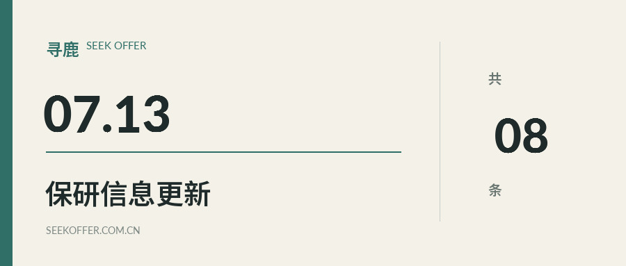

7月13日｜先看临近截止项目

寻鹿 SeekOffer
2026年7月13日 · 保研信息整理
今天整理了 8 条院校通知，其中 1 条将在三天内截止。建议先核对时间，再按申请阶段浏览，具体要求仍以院校原文为准。
今日收录 8 条 · 预推免 4 条 · 夏令营 1 条 · 开放日与宣讲 3 条
先看这几条
一、华南农业大学 · 7月16日截止
工程学院2026年优秀大学生夏令营日期的通知
二、中国农业科学院 · 7月19日
深圳农业基因组研究所2026年优秀大学生学术活动开放日报名启动
三、同济大学 · 8月25日
化学科学与工程学院2027年接收推荐免试研究生（含直接攻博）预报名的通知
预推免4 条
01
同济大学
预推免 · 化学科学与工程学院
化学科学与工程学院2027年接收推荐免试研究生（含直接攻博）预报名的通知
报名截止 · 2026-08-25 23:59
02
南开大学
预推免 · 软件学院
软件学院2026年接收优秀应届本科毕业生免试攻读研究生报名通知
报名截止 · 2026-09-01 23:59
03
大连理工大学
预推免 · 信息与通信工程学院
信息与通信工程学院2027年接收推荐免试研究生预报名通知
报名截止 · 2026-09-13 23:59
04
南京农业大学
预推免 · 全校类
关于接收2027年推免生（含直博生）提前申请的通知
报名截止 · 2026-09-20 23:59
夏令营1 条
05
华南农业大学
夏令营 · 工程学院
工程学院2026年优秀大学生夏令营日期的通知
3天内截止 · 2026-07-16 23:59
开放日与宣讲3 条
06
中国农业科学院
开放日与宣讲 · 深圳农业基因组研究所
深圳农业基因组研究所2026年优秀大学生学术活动开放日报名启动
报名截止 · 2026-07-19 23:59
07
中南大学
开放日与宣讲 · 电子信息学院
电子信息学院关于举办2026年暑期招生宣讲开放日的通知
报名截止 · 2026-07-20 23:59
08
吉林大学
开放日与宣讲 · 公共卫生学院
公共卫生学院2026年校园学术活动开放日的通知
报名截止 · 2026-08-24 23:59
说明
院校通知可能临时调整、补充或提前关闭。申请前请打开官方原文，核对报名资格、材料要求和最终截止时间。
文末「阅读原文」可查看全部通知与官方链接
寻鹿 SeekOffer · 保研信息每日整理